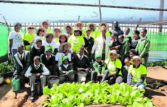

Our Services
School Feeding Program
Partnership with local schools to provide breakfast or lunch to children. Helps improve concentration, attendance, and overall student well-being.
Community Soup Kitchen
Mobile or fixed locations where anyone in need can access a warm meal. Safe and welcoming spaces for social connection.
Food Parcel Distribution
Weekly or monthly food parcels for low-income households. Includes staple items like rice, flour, canned goods, and fresh produce.
Food Recovery & Redistribution
Collecting surplus food from farms, bakeries, and restaurants. Reduces food waste while feeding more people.
Volunteer & Community Engagement
Opportunities for locals to volunteer in cooking, serving, or fundraising. Builds a culture of compassion and community care.
